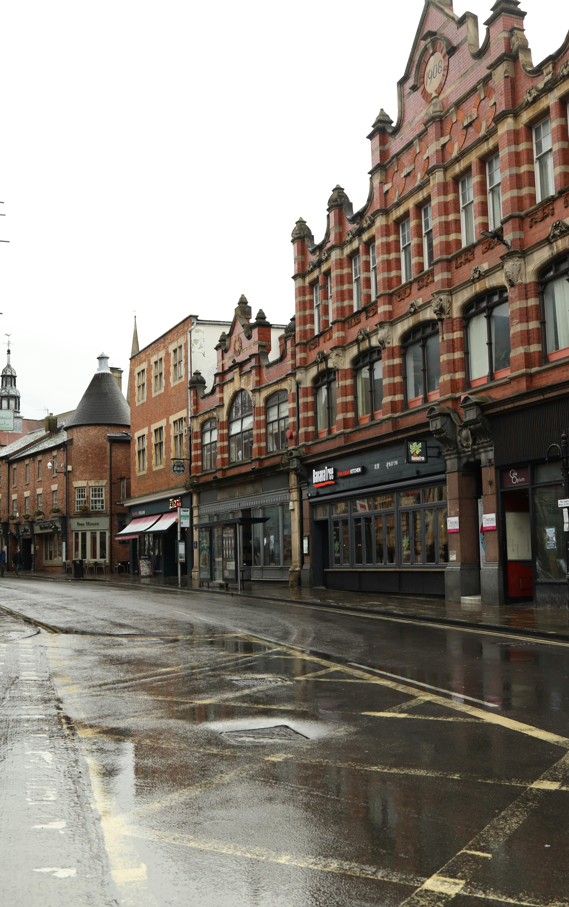
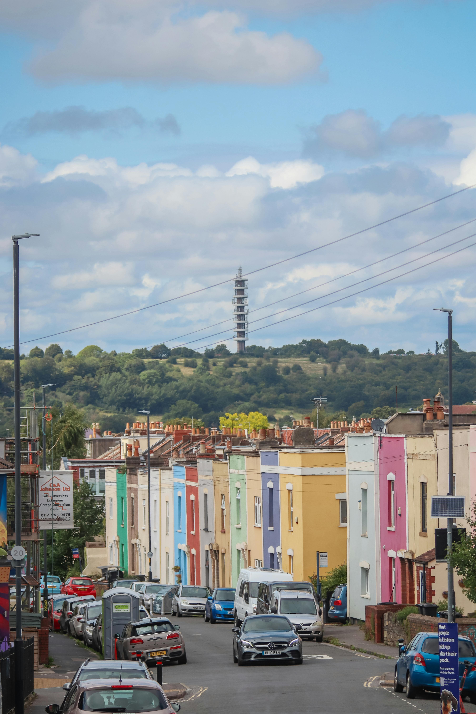

Our services meet people where they are. They range from street outreach to emergency and
long-term accommodation. We deliver skills training, like numeracy and gardening, to help
people reconnect and get back to work. We also run preventative services, so people do not
become homeless in the first place.
Our clients come from all walks of life and many have complex needs. Many of our services
are designed with specific needs or community groups in mind, like migrants or prison
leavers. All our services are gender informed. It means we can be there for the people who
need us, in the way the need us.
What we do
For over 50 years, MONAP has been at the forefront of efforts to tackle homelessness.
.jpg)
Monap's purpose
At MONAP we continue to work tirelessly to end homelessness and change
lives for the better. Our vision is that everyone has a place to call home and can fulfil their
hopes and ambitions.
No two experiences of homelessness are the same. That’s what makes our holistic
approach at MONAP so important, and why our range of services is so broad.
Every single person we work with has their own journey into homelessness and through recovery.
Where we work

London
We provide support to people across almost every London borough. Our support ranges from
emergency housing, opportunities to learn new skills, like our Putting Down Roots
gardening programme, through to innovative accommodation projects, like Housing First.
We recently received permission to continue one of our rough sleeping services in Westminster, which has helped people to recover from homelessness in the borough for over 50 years.
We recently received permission to continue one of our rough sleeping services in Westminster, which has helped people to recover from homelessness in the borough for over 50 years.
Bristol
With 18 services across Bristol, we provide support to people at every stage of
homelessness. This includes the city’s outreach team, our rough sleeping prevention team
and specialist supported housing.
Services like our Bristol Recovery College, gardening programme Putting Down Roots and our specialist mental health projects support people to move away from homelessness for good.
Services like our Bristol Recovery College, gardening programme Putting Down Roots and our specialist mental health projects support people to move away from homelessness for good.

Oxford
MONAP services in Oxford includes Outreach for people experiencing rough sleeping,
with access to an Employment Support Team and the Digital Recovery College. We also run
Somewhere Safe to Stay, for people who are new to or at risk of homelessness, and
Housing First accommodation to provide people with a long-term home.

Brighton
In Brighton & Hove, MONAP operates the largest Housing First project commissioned
by any local authority in England.
Housing First is a powerful way to end homelessness. It is an internationally recognised programme designed to support people with high and complex needs who have been unable to sustain a long-term home.
Housing First is a powerful way to end homelessness. It is an internationally recognised programme designed to support people with high and complex needs who have been unable to sustain a long-term home.
Our services
Our services rebuild lives